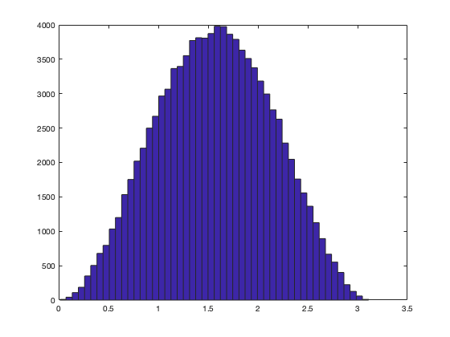

Uniformly distributed unit quaternions or rotations
Y = randq(varargin)
randq constructs uniformly distributed quaternions (distributed uniformly in 4-space). It accepts the same parameters as the MATLAB® functions rand and randn.
Each quaternion returned is the result of three calls on the MATLAB® function rand, and hence randv modifies the state of the generator used by rand. To initialise the generator or control the choice of generator, use rand.
The result will have uniformly distributed axes and Gaussian-distributed angles. This rather non-intuitive result is discussed by Shoemake (see reference). If the quaternions supplied by this function are applied to a constant pure quaternion (e.g. qi) using the formula conj(S) .* qi .* S, the result will be randomly oriented pure quaternions with a uniform distribution in 3-space: this is what is meant by 'uniformly distributed rotations' (but note that this result can be obtained more directly with randv (q.v.)).
>> q = randq(2)
q = 2x2 quaternion array
>> angle(q)
ans =
2.0598 2.0802
1.1229 1.4153
>> abs(q)
ans =
1 1
1 1
The Gaussian distribution of angles is easily demonstrated:
>> q = randq(1e5,1) q = 100000x1 quaternion array >> hist(angle(q), 50)